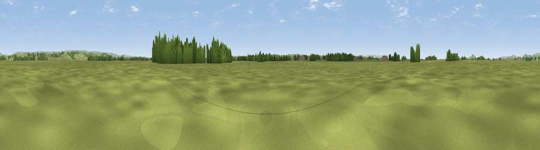

Tealham Moor, Somerset Levels
#36282 in England · top 86% of its area beats it · near BurtleThe view, rendered

A 360° render of this exact spot computed from the terrain model, tree cover and land cover — summer colours, afternoon light, calibrated against photographs of famous viewpoints. Real trees, hedges and buildings will differ in detail.
The panorama
Grey silhouette: terrain skyline in each direction (720 bearings, Earth curvature and refraction included). Dashed green: skyline with trees (+15 m) and buildings (+8 m) as obstacles. Blue strip: how far the ground is visible on each bearing.
Where the view opens
Wedge length = distance to the farthest visible ground on that bearing (vegetation-aware). Rings at 10, 25 and 50 km.
What fills the view
86% grassland · 10% woodland · 3% cropland · 1% built-up
Angular shares of the visible panorama (visual magnitude), not map area. Landscape diversity 0.23 (0–1 Shannon).
Key numbers
More beautiful places nearby
The staircase of upgrades: each row has a higher view potential than everything closer. Driving times are estimates from straight-line distance, calibrated against real road routing — check an actual route before setting out.
| Place | Direction | Drive | Score |
|---|---|---|---|
| Viewpoint near Wedmore | ENE · 5 km | ~10 min | 52.5 |
| Viewpoint near Theale | ENE · 5 km | ~11 min | 56.0 |
| Viewpoint near Edington | SSW · 6 km | ~13 min | 66.8 |
| Socombe Hill | SSW · 6 km | ~14 min | 76.4 |
| Brent Knoll | NW · 9 km | ~18 min | 77.7 |
| Viewpoint near Axbridge | N · 11 km | ~22 min | 79.2 |
| Bleadon Hill [Loxton Hill] | NNW · 13 km | ~25 min | 79.6 |
| Cothelstone Hill | WSW · 25 km | ~40 min | 82.1 |
51.19500, -2.85000 · source: verification · position refined by local search. Computed location — check access rights before visiting.